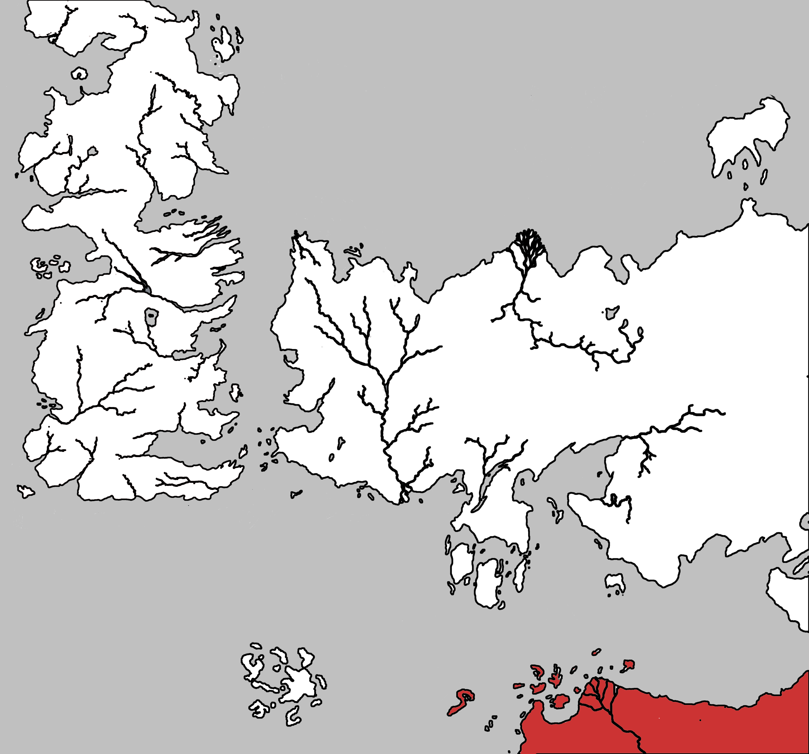

Sothoryos ( Sothoros )
Sothoros is one of the three known continents in the world. It lies to the south east of Westeros and just south of Essos across the Summer Sea. Sothoros is also often spelled Sothoryos.
Sothoros is a large continent, covered in jungles, plague-ridden, and largely unexplored. The northern coast has been mapped, with the ruined cities of Zamettar, Yeen, Gogossos and Gorosh noted, but little else is known of them.
The north coast has many islands along its length, such as the Isle of Tears and Isle of Toads, as well as the Basilisk Isles, presumably named for the creatures inhabiting them. Ax Isle and Naath also lie off the coast of the continent.
Map on Next page.
